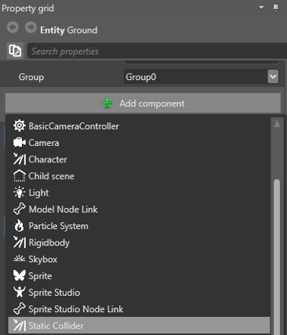
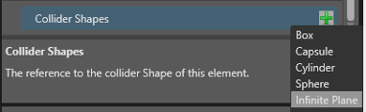

跳ね返るボールの作成
初級 デザイナー
このチュートリアルでは、静的コライダーと剛体コンポーネントを使用して、床で跳ね返るボールを作成します。
Note
このチュートリアルのスクリーンショットとビデオは、前のバージョンの Stride を使用して作成されました。そのため、UI の一部および既定のスカイボックスと球体は、お使いのバージョンと異なる場合があります。
1. 新しいプロジェクトを作成する
新しいゲーム プロジェクトを開始します。
プレロードされる既定のシーンには、カメラ、ディレクショナル ライト、スカイボックス、地面、球体の 5 つのエンティティが含まれます。地面および球体エンティティに、物理コンポーネントを追加します。
2. 静的コライダーを追加する
最初に、静的コライダー コンポーネントを地面エンティティに追加します。静的コライダーは、動かない物理オブジェクトです。一般的な静的コライダーとしては、壁、床、大きな岩などがあります。この例の静的コライダーは、それに対してボールが跳ね返るものになります。
地面エンティティを選択します。
［Property grid］で［Add component］をクリックして、［Static Collider］を選択します。

エンティティの形状と一致するようにコライダーの形状を設定します。そのためには、［Property grid］で［Static Collider］コンポーネントを展開してプロパティを表示します。
［Collider Shapes］の隣の
 (［Add a new item to the list］) をクリックして、［Infinite Plane］を選択します。
(［Add a new item to the list］) をクリックして、［Infinite Plane］を選択します。
地面に静的コライダーが追加され、ボールが跳ね返るものができました。
3. 剛体コライダーを追加する
次に、剛体コンポーネントを球体に追加します。剛体は動く物理オブジェクトであり、跳ね返るボールに最適です。
シーン エディターで球体エンティティを選択します。
［Property grid］で［Add component］をクリックして、［Rigidbody］を選択します。
地面エンティティの場合と同じように、エンティティと一致するようにコライダーの形状を設定します。そのためには、［Property grid］で［Rigidbody］コンポーネントを展開してプロパティを表示します。
［Collider Shapes］の隣の
(［Add a new item to the list］) をクリックして、［Sphere］を選択します。
4. ボールを配置する
空中から動き始めて地面に向かって落下するように、球体を配置します。
球体エンティティを選択します。
［Property grid］の［Transform］で、［Position］を X: 0, Y: 6, Z: 0 に設定します。

これにより、ボールは地面の上の空中に配置されます。
5. カメラを配置する
次に、シーンがよく見えるようにカメラを移動します。
カメラ エンティティを選択します。
［Property grid］の［Transform］で、［Position］を X: -12, Y: 7, Z: 9 に設定します。
［Rotation］を X: -20, Y: -50, Z: 0 に設定します。
シーン エディターの右下にある［Camera preview］で、カメラ ビューをプレビューできます。

6. 反発を設定する
ここまでで、シーンがどのように見えるかを確認します。プロジェクトを実行するには、F5 キーを押します。
球体 (剛体) が重力に反応して落下します。地面 (静的コライダー) がその落下を妨げます。しかし、跳ね返り効果はまだありません。
跳ね返り効果を作成するには、球体と地面の反発を変更する必要があります。これは、現実世界の衝突の反発係数 (Wikipedia) をシミュレートします。
- 衝突するエンティティの反発プロパティが 0 の場合、エンティティはすべてのエネルギーを失い、衝突と同時に動かなくなります。
- 反発が 1 の場合は、エネルギーを失わず、衝突したときと同じ速さで跳ね返ります。
- 反発が 1 より大きい場合は、エネルギーを獲得し、より大きい速度で跳ね返ります。
原則として、現実的な衝突を作成するには、反発を 0 ～ 1 の範囲に設定します。
この例の球体エンティティと地面エンティティに反発を設定します。
球体エンティティを選択します。
［Property grid］の［Rigidbody］で、［Restitution］を 0.8 に設定します。
地面エンティティを選択します。
［Property grid］の［Static Collider］で、［Restitution］を 0.5 に設定します。

物理特性がどのように変化したかを確認するため、プロジェクトを再び実行します (F5 キー)。今度は、ボールは静止する前に地面で跳ね返ります。

両方のエンティティの反発を 1 に変更してみます。ボールはエネルギーを失わず、いつまでも同じ高さに跳ね返ります。

反発を 1.1 に設定すると、ボールは毎回少しずつ高くまで跳ね返ります。

跳ね返るボールができたので、それを使用してトリガーを学習できます。詳細については、「トリガーをスクリプトにする」チュートリアルを参照してください。